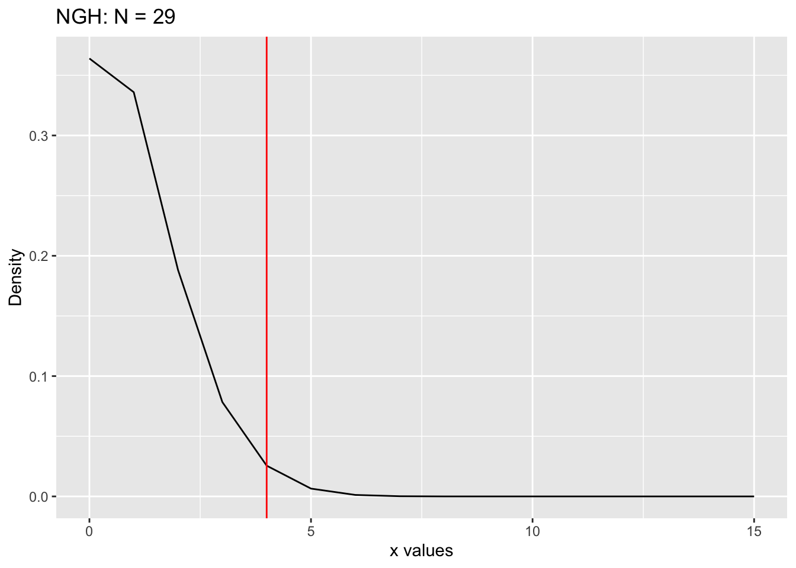

── Attaching core tidyverse packages ──────────────────────── tidyverse 2.0.0 ──
✔ dplyr 1.1.4 ✔ readr 2.1.5
✔ forcats 1.0.0 ✔ stringr 1.5.1
✔ ggplot2 3.5.1 ✔ tibble 3.2.1
✔ lubridate 1.9.3 ✔ tidyr 1.3.1
✔ purrr 1.0.2
── Conflicts ────────────────────────────────────────── tidyverse_conflicts() ──
✖ dplyr::filter() masks stats::filter()
✖ dplyr::lag() masks stats::lag()
✖ purrr::rdunif() masks extraDistr::rdunif()
ℹ Use the conflicted package (<http://conflicted.r-lib.org/>) to force all conflicts to become errors
source('../functions.R', encoding ='UTF-8')
Testing: m = 3, x = 4, M = 21, Confidence Level = 0.95
Point Estimate of N
# N = 49: Point Estimate of Nm =3x =4N =49M =21data =data.frame(x =seq(0, 15))data$y =ngh_pmf(x = (data$x), N = N, M = M, m = m)ggplot(data, aes(x = x, y = y)) +geom_line() +geom_vline(xintercept = x, color ="red") +ggtitle(paste("NGH: N =", N)) +xlab("x values") +ylab("Density")
Lower Bound
# Lower Bound# N = 29: Area to the right is just over (not under) 0.025 (alpha = 0.05)# Note: using area right for lower bound (used area left for lower bound for M unknown)m =3x =4N =29M =21data =data.frame(x =seq(0, N-M))data$y =ngh_pmf(x = (data$x), N = N, M = M, m = m)ggplot(data, aes(x = x, y = y)) +geom_line() +geom_vline(xintercept = x, color ="red") +ggtitle(paste("NGH: N =", N)) +xlab("x values") +ylab("Density")

area_left =ngh_cdf(x = x, N = N, M = M, m = m, lower_tail =TRUE)area_right =ngh_cdf(x = x -1, N = N, M = M, m = m, lower_tail =FALSE)#print(paste("Area to the left is:", area_left))print(paste("Area to the right is:", area_right))
[1] "Area to the right is: 0.0334806955496613"
Upper Bound
# Upper Bound# N = 204: Area to the left is just over (not under) 0.025 (alpha = 0.05)# Note: using area left for upper bound (used area right for upper bound for M unknown)m =3x =4N =204M =21data =data.frame(x =seq(0, N-M))data$y =ngh_pmf(x = (data$x), N = N, M = M, m = m)ggplot(data, aes(x = x, y = y)) +geom_line() +geom_vline(xintercept = x, color ="red") +ggtitle(paste("NGH: N =", N)) +xlab("x values") +ylab("Density")
area_left =ngh_cdf(x = x, N = N, M = M, m = m, lower_tail =TRUE)area_right =ngh_cdf(x = x -1, N = N, M = M, m = m, lower_tail =FALSE)print(paste("Area to the left is:", area_left))
[1] "Area to the left is: 0.0252929880843653"
#print(paste("Area to the right is:", area_right))
Confidence Interval Function
CI_Analog_CP_N_Unknown <-function(M, m, conf_level =0.95, max_N =1000) { target_probability = (1- conf_level) /2 max_x = max_N - M results =data.frame(x =0:max_x, lower_bound =NA, upper_bound =NA) previous_upper_bound =0for (xi in0:max_x) { lower_bound = M + xi# Find lower boundfor (N in (M + xi):(M + max_x)) { area_right =ngh_cdf(x = xi -1, N = N, M = M, m = m, lower_tail =FALSE)if (isTRUE(all.equal(area_right, target_probability))) { lower_bound = Nbreak } elseif (area_right > target_probability) { lower_bound = Nbreak } } upper_bound = lower_bound# Find upper boundfor (N in (lower_bound):(M + max_x)) { area_left =ngh_cdf(x = xi, N = N, M = M, m = m, lower_tail =TRUE)if (isTRUE(all.equal(area_left, target_probability))) { upper_bound = Nbreak } elseif (area_left < target_probability) { upper_bound = N -1break } }# Stop the iteration if the upper bound starts decreasing (because of max_N)if (upper_bound < previous_upper_bound) {break }# Update the previous upper bound for the next iteration previous_upper_bound = upper_bound# Store the results results[xi +1, "lower_bound"] = lower_bound results[xi +1, "upper_bound"] = upper_bound }# Filter out any rows where the upper bound is invalid results <- results[!is.na(results$upper_bound), ]return(results)}
coverage_prob_ACP_N_unknown <-function(M, N, m, conf_level =0.95, max_N =1000) { found_N_in_last_CI <-TRUEwhile (found_N_in_last_CI) {# Calculates all confidence intervals ci_results <-CI_Analog_CP_N_Unknown(M, m, conf_level, max_N)# Get the confidence interval of the last x last_x_ci <- ci_results[nrow(ci_results), ]# Check if N is within the last x's confidence intervalif (N >= last_x_ci$lower_bound & N <= last_x_ci$upper_bound) {# If N is still in the CI, increase max_N and try again max_N <- max_N +100 } else {# Stop increasing if N is not in the last x's CI anymore found_N_in_last_CI <-FALSE } }# Once max_N is large enough, continue with the original calculation ci_results <-CI_Analog_CP_N_Unknown(M, m, conf_level, max_N)# Finds all x's where N is in the confidence interval covered_x <- ci_results %>%filter(lower_bound <= N & upper_bound >= N) %>%pull(x)if (length(covered_x) ==0) {return(data.frame(N = N, coverage_prob =NA, min_x =NA, max_x =NA)) }# Finds the min and max of covered x's to know which lines to connect in plot min_x <-min(covered_x, na.rm =TRUE) max_x <-max(covered_x, na.rm =TRUE)# Sums the probabilities (pmf's) of all x's where N is in the CI total_prob <-sum(unlist(lapply(covered_x, function(x) ngh_pmf(x, N, M, m))))return(data.frame(N = N, coverage_prob = total_prob, min_x = min_x, max_x = max_x))}
Testing: M = 21, m = 3, Confidence Level = 0.95
coverage_prob_ACP_N_unknown(M =21, N =50, m =3, conf_level =0.95, max_N =1000)
Rows: 230 Columns: 5
── Column specification ────────────────────────────────────────────────────────
Delimiter: ","
dbl (5): N, coverage_prob, min_x, max_x, group
ℹ Use `spec()` to retrieve the full column specification for this data.
ℹ Specify the column types or set `show_col_types = FALSE` to quiet this message.
# Create a group column for consistent min_x and max_x# The group column assigns a unique group number whenever there is a change in min_x or max_x values# cumsum is used to create a cumulative sum that increments the group number whenever there is a# change in min_x or max_xcoverage_df = coverage_df %>%mutate(group =cumsum(c(1, diff(min_x) !=0|diff(max_x) !=0)))ggplot(coverage_df, aes(x = N, y = coverage_prob, group = group)) +geom_line() +geom_point() +labs(x ="N", y ="Coverage Probability of N") +geom_hline(yintercept = conf_level, color ="red") +# ylim(0, 1) +ylim(conf_level -0.005, 1) +theme_minimal()